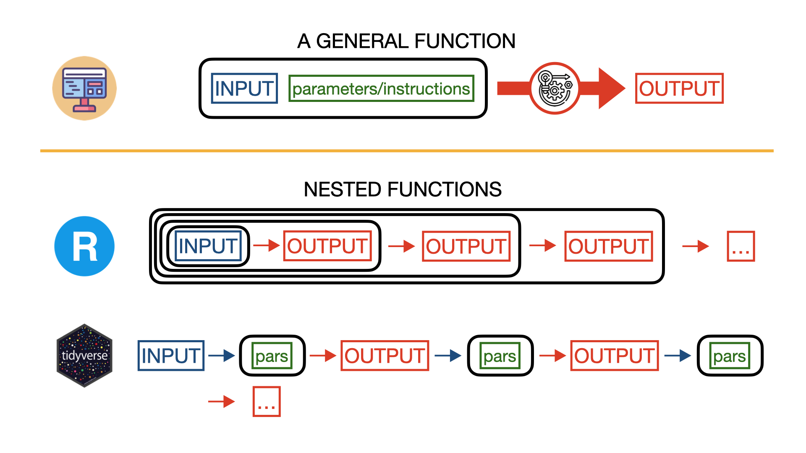
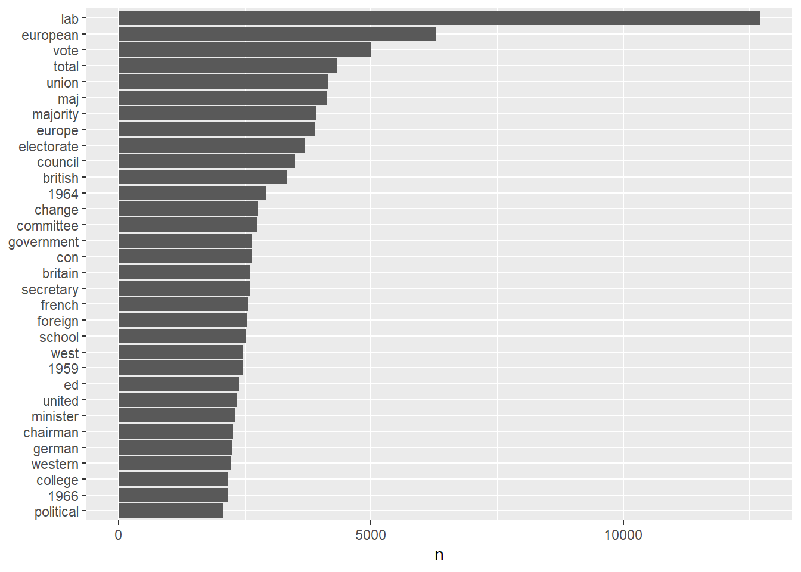
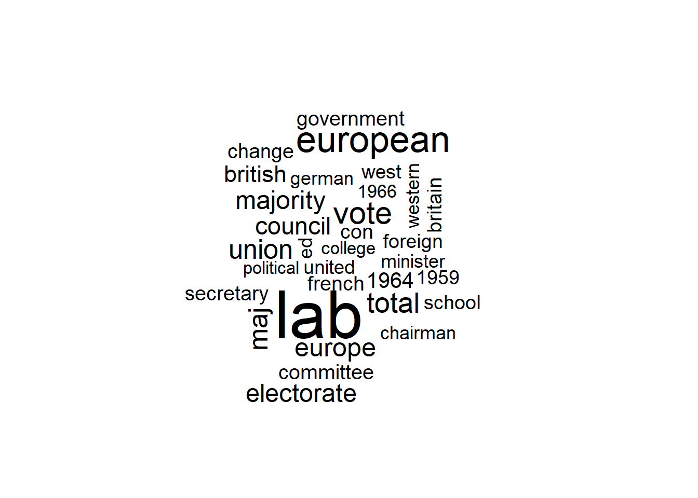
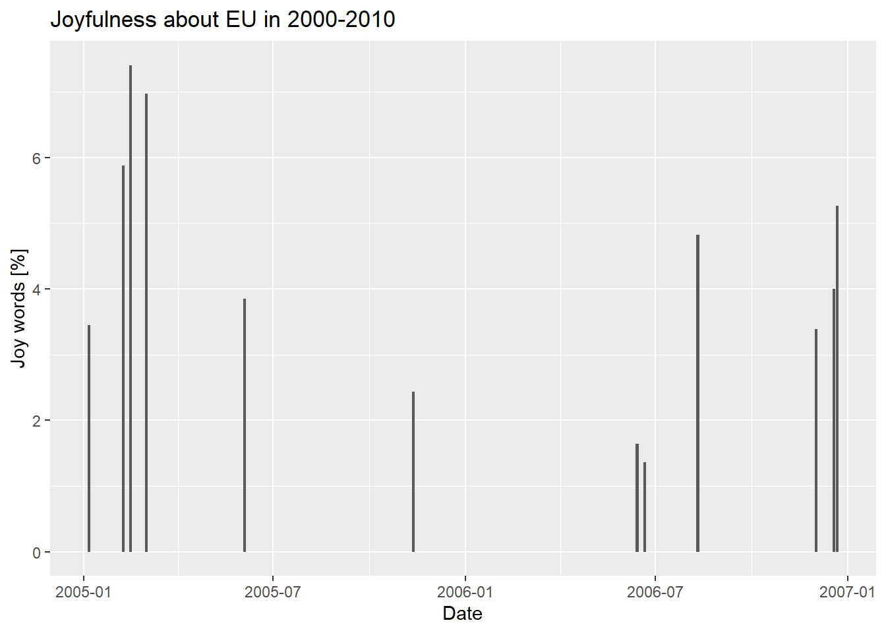
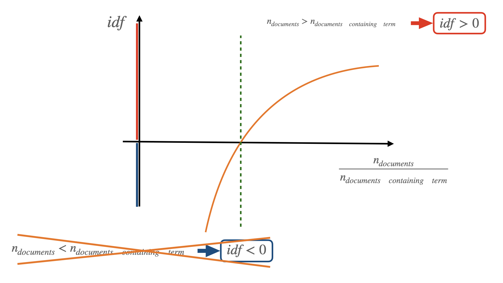
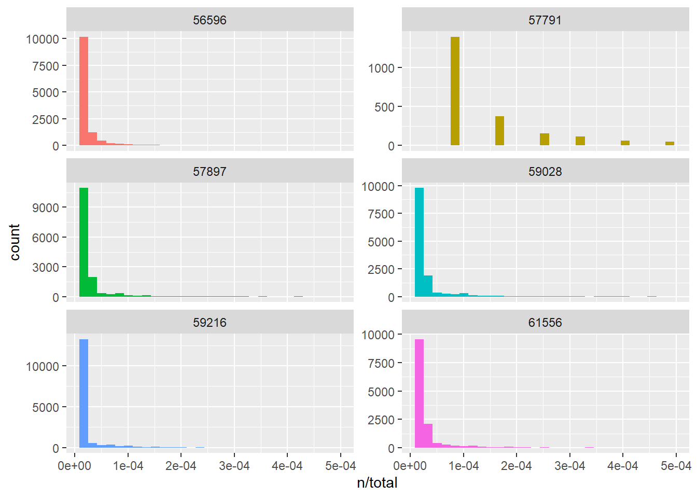
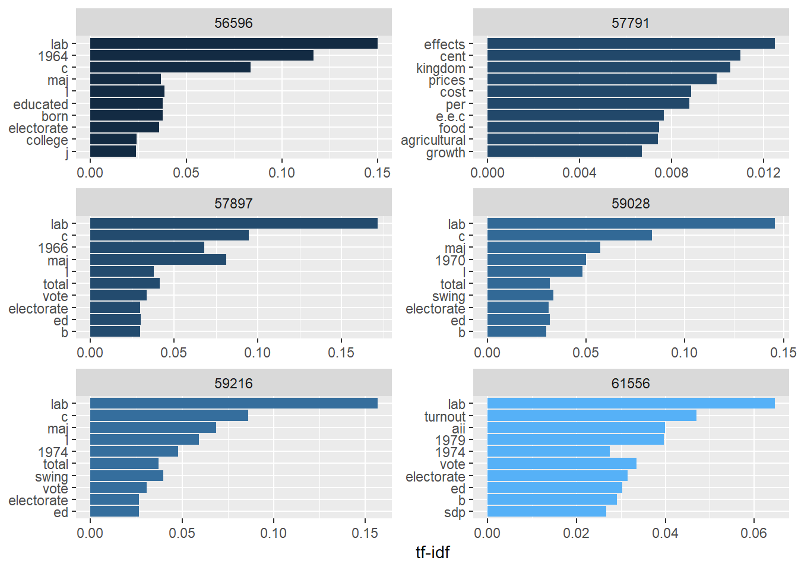
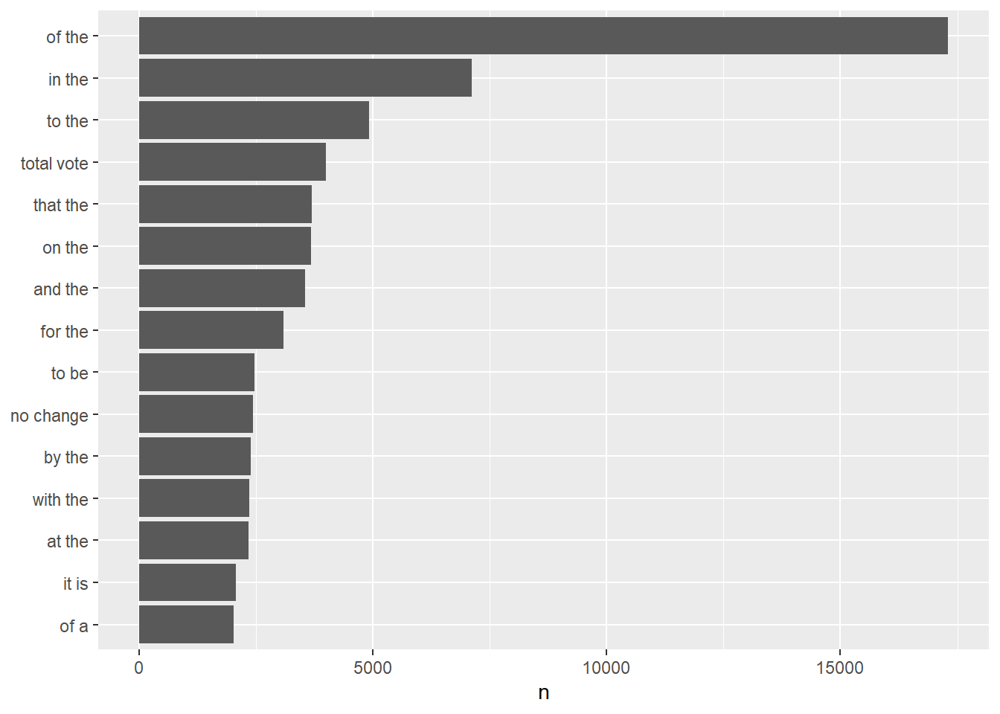
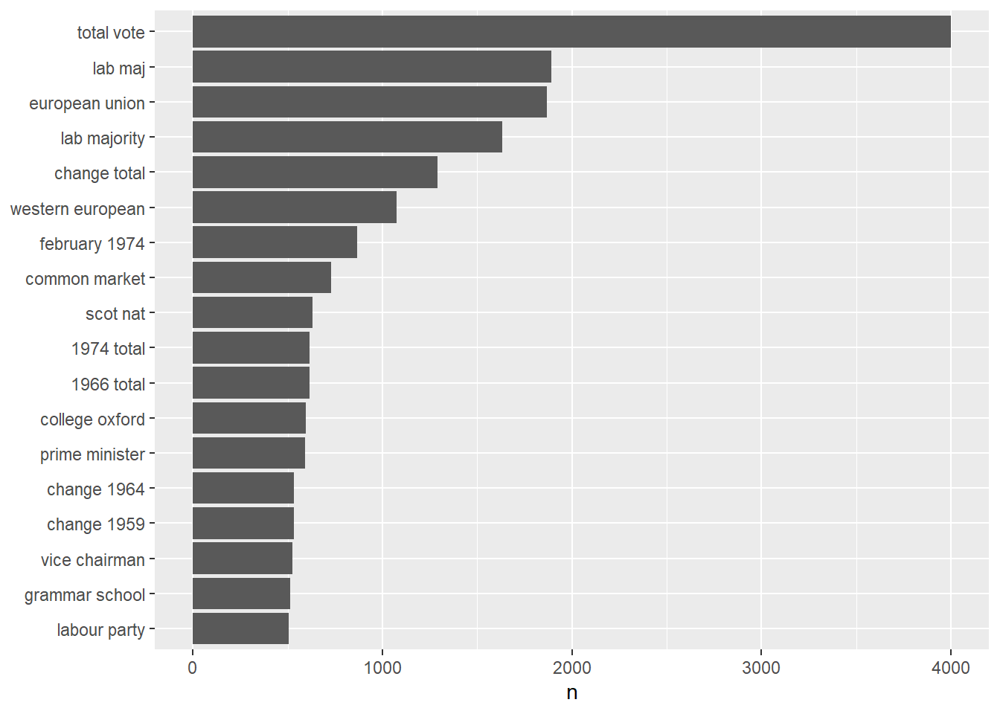

Text Mining with R
Introduction
In this session we will see how to perform basic text mining with R. Text mining refers to the process of extracting (mining) information and insights from text. Any text is by nature subjective and ambiguous. However, text mining can be extremely useful when looking for any sort of pattern, trend, or relationships in large volumes of text data (articles, documents, emails, social media posts, etc).
Text mining, or text analysis, can be a very challenging task as text data is often unstructured, i.e. it does not have a predefined format or structure. In addition, the volume of data available for mining is huge and very “noisy”, i.e. it contains a lot of irrelevant information, typos, etc. For these and several other reasons, text mining requires quite sophisticated techniques to obtain meaningful results.
Thankfully, most of these techniques have already been hard-coded, grouped, and made available into so-called packages (de facto ready-to-use pieces of code). Here, we will focus on the tidytext package developed for the programming language R. This package follows the same “philosophy” of the suite of packages tidyverse, i.e. it is designed to work with text data in a “tidy” and efficient manner (you can read more about tidytext here). tidytext provides a set of tools (functions) for manipulating and analyzing text data. These tools allow users to easily convert unstructured text data into a structured format that can be statistically analyzed. In this session we will go through the basic steps of the general text mining process using tidytext, in particular we will use its functions to perform data collection, preprocessing, feature extraction, text classification, and visualization.
Each paragraph of this session is organized in the following structure:
- Description of main concepts and expected results;
- R code with its output (DataFrames, computations, plots, etc);
- A detailed description of what the code is doing. The descriptive text is simply plain text as the one you are reading right now. Code will be in the grey boxes that you can directly copy (click on the copy icon on the upper right corner of each box) and paste into your R script or Markdown file. Code output (the result of our operations) will immediately follow the blocks of code like in this example:
Slides
The content of this chapter is also summarized in the following slides, if you need a quick refresher or overview:
Let’s Get Started!
print('Good luck everyone!')[1] "Good luck everyone!"When necessary, code and outputs blocks are followed by a line-by-line explanation of the operations executed in the code box:

How does it work?
-
The function
print()displayed the custom message “Good luck everyone!” as an encouragement to all the students following the course.
Data Analysis Setup
Let’s be sure you have all the needed packages installed and loaded into your R studio session. Remember that installing means downloading and installing all the files related to a package in your computer and this is usually a one-time operation. On the other hand, loading a package means making the package’s functions and other features ready to be used in your R session. This is something you need to do every time you start (or re-start) your R session. To install and load packages we use the R functions install.packages() and library(), respectively. Remember that install.packages() requires its arguments to be specified between double quotes, while library() accepts both double quotes or the plain name of the package.
Let’s install packages
install.packages("tidyverse")
install.packages("tidytext")
install.packages("wordcloud")and load them:
library(tidyverse)Warning: package 'tidyverse' was built under R version 4.2.3Warning: package 'ggplot2' was built under R version 4.2.3Warning: package 'tibble' was built under R version 4.2.3Warning: package 'tidyr' was built under R version 4.2.3Warning: package 'readr' was built under R version 4.2.3Warning: package 'purrr' was built under R version 4.2.3Warning: package 'dplyr' was built under R version 4.2.3Warning: package 'forcats' was built under R version 4.2.3Warning: package 'lubridate' was built under R version 4.2.3── Attaching core tidyverse packages ──────────────────────── tidyverse 2.0.0 ──
✔ dplyr 1.1.2 ✔ readr 2.1.4
✔ forcats 1.0.0 ✔ stringr 1.5.0
✔ ggplot2 3.4.2 ✔ tibble 3.2.1
✔ lubridate 1.9.2 ✔ tidyr 1.3.0
✔ purrr 1.0.1
── Conflicts ────────────────────────────────────────── tidyverse_conflicts() ──
✖ dplyr::filter() masks stats::filter()
✖ dplyr::lag() masks stats::lag()
ℹ Use the conflicted package (<http://conflicted.r-lib.org/>) to force all conflicts to become errorslibrary(tidytext)Warning: package 'tidytext' was built under R version 4.2.3library(wordcloud)Warning: package 'wordcloud' was built under R version 4.2.3Loading required package: RColorBrewer-
tidyverse: this is an “opinionated collection of R packages designed for data science. All packages share an underlying design philosophy, grammar, and data structures”. Among the many tidyverse packages, we are going to use in particular:
- readr: allowing to read data from files;
- dplyr: providing tools for data manipulation;
- tidyr: providing tools to make your data “tidy”;
- forcats: providing tools to solve problems with factors, and advanced R topic we would not spend much time talking about;
- ggplot2: a system for creating graphics.
- tidytext: an R package for text mining based on the tidy data principles;
- wordcloud: a package to generate word cloud plots.
Just before starting: tidyverse pipelines
Generally speaking, in programming a function takes an input and some more information used to customize the function behavior (parameters), it runs some operation on the input according to the specified parameters, and it returns an output.

In data analysis, most of the times, you will find yourself in the situation where, in order to plot meaningful information or to extract meaningful statistical quantities from data, you need to “feed” the data to several different functions, collect their outputs, and use those results as input for other functions. For example, you may want first read the data from a file, then select two columns, count how many identical values are in those columns, and plot a histogram plot with those counts. Each of these operation will in practice performed by a single function. Assuming we want to apply 4 different functions to data, one after another (like in the previous example), our R code will look like something like this:
output1 <- func1(data, pars1)
output2 <- func2(output1, pars2)
output3 <- func3(output2, pars3)
output4 <- func4(output3, pars4)In most of the cases we will be interested only in the final output (output4) and saving each output into a variable (as it happens in the previous block of code) would only waste memory space. To avoid that, we can use directly the output of a function as input for the next one in a nested structure:
output4 <- func4(func3(func2(func1(data,pars1),pars2),pars3),pars4)At this point you probably noticed that the nested structure can be quite confusing, making us loosing track of what is the input and the additional parameters for each function, especially when we need to apply several functions to data one after another.
To simplify this kind of situations, the package tidyverse (once loaded) allows to use an alternative syntax called pipeline. In a pipeline, the input parameter of a function is NOT specified between the parenthesis of the function, like in plain R, but it appears OUTSIDE the function and it is followed by the “pipe” operator “%>%”. The pipe operator takes whatever is on its left-hand side and it passes it as an input for the code on the right-hand side. Confused? Look how the previous line of code becomes using the tidyverse pipeline:
output4 <- data %>%
func1(pars1) %>%
func2(pars2) %>%
func3(pars3) %>%
func4(pars4) 
How does it work?
-
data is our first raw input. The pipe operator “$>$” takes it and uses it as an input for
func1(pars1), where pars1 are additional parameters specified by the user. func1 will produce an output, but instead of storing this output into a variable, we immediatly “inject” it into another function using again the pipe operator. We repeat this operation four times, one time for each function we want to use, until we finish to perform all our operations. The result will be stored in the variable output4 as indicated by the operator “<-” at the beginning of the line.
The workflow and the final computed result of the previous two blocks of code (with plain R nested functions and tidyverse pipeline, respectively) is absolutely identical, but the tidyverse pipeline allows to write nested functions in a more concise, readable, easy to understand, and easy to modify way. Code using tidyverse pipelines is therefore less prone to errors, but it is ultimately up to you to choose your preferred syntax.
Reading data
In this session we will work with data that we already collected using the web application I-Analyzer. We obtained our data querying for “European Union” over the news of the Times Digital Archive between 1945 and 2010. The data are stored in a coma-separated-values (csv) file and we are going to convert them into an R DataFrame:
data_file_name <- '../data/ianalyzer_query.csv'
data_df <- read_delim(data_file_name,
delim = ";",
escape_double = FALSE,
col_types = cols(`date-pub` = col_date(format = "%B %d, %Y"),
issue = col_integer()), trim_ws = TRUE)
print(nrow(data_df))[1] 1532print(colnames(data_df))[1] "author" "category" "content" "date-pub" "edition" "issue" "query"
[8] "title" "volume" 
How does it work?
-
We first load the library
readras it contains all sort of dunctions to read files into R DataFrames. We also load the librarytidyverseas it contains a lot of useful functions for data manipulation and visualization. Furthermore it will allow us to use the tidyverse pipeline syntax; -
We store the name of our dataset into the variable
data_file_name. The name includes the realtive path of the data, as the code is supposed to be ran in the book folder of the provided material; -
We read the data using
read_delim(), a function to read coma separated files (csv) and more into R DataFrames. In this case, we obtained all the necessary arguments clicking on “Import Dataset” in the Environment window (top-right) of R studio. In particular, we gave instructions to convert the date of publication column (“date-pub”) data format (<month_str> <day>, <year>) into an R date object; -
We finally printed the names of the columns in our DataFrame using
colnames().
We now have all the data we need in a single R DataFrame, data_df, the starting point of our analysis. The information we are most interested in it’s stored in the “content” column. Let’s see how to extract this information.
Text Preprocessing
Tokenization
As we mentioned in the introduction, text data mostly comes unstructured and it is up to us to define a data structure suitable for the kind of text analysis we want to perform. We want our data structure to be comprehensive and to be easily manipulated according to our needs. Having this goal in mind, a possibility is to divide text into either characters, words, or paragraphs and to obtain a data set where each row contains one of these elements and all its relative information.
The process of dividing a string of text into meaningful units is called Tokenization and these meaningful units are called tokens. A token can be a word, a phrase, a paragraph, or a single character depending on the nature of our analysis. If, for example, we want just to explore how many times the name of a certain politician is mentioned in a speech, our tokens would probably be all the words of the speech and our analysis would consist on counting how many tokens are equal to the name of the politician.
To perform “good” text mining, not only we want to optimally “tokenize” our text as well as organize our tokens in a tidy way, quite literally! For the R community, “tidy” has a very specific meaning, i.e. structuring data sets to make them consistent, easy to work with, and easy to analyze. In our context it means having a single token per data frame row. R allows us to perform all these operations in few lines thanks to the library tidytext:
tidy_content <- data_df %>% unnest_tokens(word, content, token="words")
tidy_content# A tibble: 1,549,578 × 9
author category `date-pub` edition issue query title volume word
<chr> <chr> <date> <lgl> <int> <chr> <chr> <lgl> <chr>
1 ['FROM A SPECIAL … ['News'] 1962-11-05 NA 55540 time… Euro… NA from
2 ['FROM A SPECIAL … ['News'] 1962-11-05 NA 55540 time… Euro… NA a
3 ['FROM A SPECIAL … ['News'] 1962-11-05 NA 55540 time… Euro… NA spec…
4 ['FROM A SPECIAL … ['News'] 1962-11-05 NA 55540 time… Euro… NA corr…
5 ['FROM A SPECIAL … ['News'] 1962-11-05 NA 55540 time… Euro… NA at
6 ['FROM A SPECIAL … ['News'] 1962-11-05 NA 55540 time… Euro… NA this
7 ['FROM A SPECIAL … ['News'] 1962-11-05 NA 55540 time… Euro… NA junc…
8 ['FROM A SPECIAL … ['News'] 1962-11-05 NA 55540 time… Euro… NA of
9 ['FROM A SPECIAL … ['News'] 1962-11-05 NA 55540 time… Euro… NA focus
10 ['FROM A SPECIAL … ['News'] 1962-11-05 NA 55540 time… Euro… NA on
# ℹ 1,549,568 more rows
How does it work?
-
We first load the library
tidytextcontaining all the functions we need for text mining; -
We use the
tidytextfunctionunnest_tokens()to split the text stored in the column content of our DataFramedata_dfinto words. First of all, we “feed” our raw data DataFrame to the function using the workflow syntaxdata_df %>% unnest_tokens(...). This is equivalent to specifying the DataFrame as the first argument of the function, i.e.unnest_tokens(data_df, work,content,token="words"). The other three arguments of the function specify the name of the column containing the tokens (word), the text that needs to be tokenized (the column content), and the kind of token (in our case, words).
In the code block above we use the function unnest_tokens() to tokenize the content of our DataFrame. A quick view of the resulting DataFrame tidy_content shows us that the content column is gone, while a column named word now appears at the end of the DataFrame. How do we know which word belongs to which content AFTER tokenization? Is that information lost? The content in your raw data DataFrame has a unique identifier associated with it, in our case the identifier is stored in the column issue. As the column issue is STILL present in tidy_content, each word, or token, has therefore a unique identifier specifying from which content it came from.
Cleaning up data
Cleaning up data is an essential step in any data analysis process. Before you can analyze a dataset, you need to ensure that the data is accurate (data values are correct and free from errors), complete, and consistent (uniform and following a standard format or structure). Data cleaning is the process of identifying and correcting or removing errors, inconsistencies, and inaccuracies from a dataset. The output of the I-Analyzer data (the csv file we are using for our analysis) is already a consistent data set, however, every time one of our programs performs some sort of operation on the data set, errors may occur. The absolute nightmares of every data scientist are missing or undefined values, these usually appear in our datasets as “NA” (Not Available) or “NaN” (Not a Number). NA is used in R (and some other programming languages) to represent missing or undefined values in data. You will find NaN more often in Python or Javascript programming. In general NA is used for non-numeric data types like characters and NaN for numeric data types, but the most important thing to remember is that you want to find out if your data set contains any of these values as they may severely affect your data analysis results. Does our DataFrame contain any NA values in the issue column? Let’s find out!
are_there_na <- any(is.na(tidy_content$issue))
if (are_there_na) {
print('WARNING! There are NA in your data!')
} else {
print('Lucky you! I could not find any NA in your data (yet...)!')
}[1] "WARNING! There are NA in your data!"
How does it work?
-
The function
is.na(data_df)scans all the values of our DataFrame and returns another DataFrame made of boolean variables, i.e. True or False depending if the scanned value is a NA or not, respectively. We then apply the functionany()to this boolean DataFrame to check if there is AT LEAST one TRUE value and, therefore, one NA value. If so,any()will return TRUE, FALSE otherwise. This result is stored in the variable are_there_na that, indeed, will be TRUE or FALSE depending if there is at least one NA in our data set or nor; - We use a conditional statement IF … ELSE … to print two messages depending on the value of the variable are_there_na.
We found NA in our dataset. Nothing to worry about, this is the common case, so common that there are plenty of functions to clean up our data. How shall we proceed in this case? Usually, we would like to inspect the data to check what is missing and how to better replace those values. In our case, you can relatively easily find out that one of the issues’ identifier is missing. For simplicity, we will just exclude the issue from our data set using the function na.omit() that, indeed, removes all the rows containing NA returning a “clean” DataFrame:
tidy_content <- tidy_content[!is.na(tidy_content$issue), ]
How does it work?
-
The syntax
tidy_content[<rows>,<columns>]allows us to select specific rows and columns in our DataFrame, an operation called slicing. In place ofand we can put numerical indices specifying single or ranges of rows/columns or we can use a conditional statement on specific rows/columns. In this case, we select all the DataFrame rows whose value in the issue column is NOT Na. We do not specify any condition on columns, this means we will select ALL the DataFrame columns;
Let’s check if there are still NA in our data set:
are_there_na <- any(is.na(tidy_content$issue))
if (are_there_na) {
print('WARNING! There are NA in your data!')
} else {
print('Lucky you! I could not find any NA in your data (yet...)!')
}[1] "Lucky you! I could not find any NA in your data (yet...)!"A second problem of unstructured data is that it can be very “noisy”, i.e. it can contain a lot of irrelevant information. Actually, the most common words in a text are words that have very little meaning, such as “the”, “and”, “a”, etc. These words are referred to as stop words and removing stop words from text (in a way or another) is a fundamental step of text mining:
data(stop_words)
tidy_clean_content <- tidy_content %>% anti_join(stop_words)
tidy_clean_content# A tibble: 801,754 × 9
author category `date-pub` edition issue query title volume word
<chr> <chr> <date> <lgl> <int> <chr> <chr> <lgl> <chr>
1 ['FROM A SPECIAL … ['News'] 1962-11-05 NA 55540 time… Euro… NA spec…
2 ['FROM A SPECIAL … ['News'] 1962-11-05 NA 55540 time… Euro… NA corr…
3 ['FROM A SPECIAL … ['News'] 1962-11-05 NA 55540 time… Euro… NA junc…
4 ['FROM A SPECIAL … ['News'] 1962-11-05 NA 55540 time… Euro… NA focus
5 ['FROM A SPECIAL … ['News'] 1962-11-05 NA 55540 time… Euro… NA euro…
6 ['FROM A SPECIAL … ['News'] 1962-11-05 NA 55540 time… Euro… NA 37
7 ['FROM A SPECIAL … ['News'] 1962-11-05 NA 55540 time… Euro… NA women
8 ['FROM A SPECIAL … ['News'] 1962-11-05 NA 55540 time… Euro… NA sat
9 ['FROM A SPECIAL … ['News'] 1962-11-05 NA 55540 time… Euro… NA round
10 ['FROM A SPECIAL … ['News'] 1962-11-05 NA 55540 time… Euro… NA conf…
# ℹ 801,744 more rows
How does it work?
-
data(stop_words)loads a data set containing the most commonly used stop words in English language into the R environment. If you are in R studio you will now see in your Environment tab (the top-right one) a new DataFrame called stop_words; -
Using the function
anti_join()we select those rows (so words) in the DataFrame tidy_content that do NOT match the stop words. In other words, we created a new DataFrame (tidy_clean_content) removing all the stop words listed in stop_words from tidy_content.
With the few lines of code above, we cleaned up the tidy_content DataFrame from stop words. We perfomed basic data cleaning and our data set is now ready for some analysis.
Text Analysis
Counting words
After having tokenized and cleaned up our data, it’s time to perform the most basic text mining operation: count the number of times a certain word appears in our text. Even if conceptually it seems a quite trivial operation, by counting the frequency of each word in a text we can gain important insights about the general characteristics of the text. Furthermore, counting the frequency of specific words (i.e. how many times they occur per sentence/text/paragraph/document/etc) we can classify a text or define a model to identify the underlying topic or theme.
word_count <- tidy_clean_content %>%
count(word) %>%
filter(n > 2000) %>%
mutate(word = reorder(word, n))
word_count_plot <-
word_count %>%
ggplot(aes(n, word)) +
geom_col() +
labs(y = NULL)
word_count_plot

How does it work?
-
We “inject” our data as input of the function
count()that, indeed, counts the identical entries of the column word.count()has an argument (name) that it is used to specify the name of the column where the count values will be stored. In this case, the name argument is omitted, therefore, by default the name of the column will be n. After usingcount(), the result is a DataFrame with two columns: the quantity that has been counted (word) and the result of the counting (n).
There are a lot of words in our text and it would not be very convenient plotting all of them, so we apply the functionfilter()to select only those words with count (column n) larger than 2000. We also want words to be displayed in descending order of counts, to do that we use the functionmutate()to substitute the column word with the same column (word) arranged by counts (n). To rearrange the words in order of counts we use the functionreorder(). We store the result in the DataFrame word_count; -
Time to plot! We “feed” our data to the function
ggplot(), in it we specify x and y axis to plot withaes(n, word)(aesstand for aesthetic).geom_col()specified that type of plot, in this case a column chard or a bar chart, andlabs(y = NULL)removes the y-axis label (as it is quite obvious that we are visualizing words).
Looking at the data, we are not surprised to see that the second most frequent word is “european” as we are analyzing data extracted from the “European Union” query. It is interesting to note that the third most frequent word is “vote”. This may suggest that all the times “European Union” was mentioned in the news, it was mostly related to elections.
A very popular way to visualize the most common words in a sample of texts is a word cloud. A word cloud is a graphical representation of words where the size of each word indicates its frequency within a given data set. Visualizing our data using a word cloud is not particularly useful for quantitative analysis, but it can be very effective when communicating text mining results. Obtaining a word cloud plot in R is as easy as all the tasks we performed so far, we just need to download the package workcloud and use the function wordcloud() as follows:
word_cloud_plot <-
word_count %>%
with(wordcloud(word, n, max.words = 1000))
word_cloud_plotNULLWord classification and Sentiment Analysis
Can we run a text analysis to evaluate if a sentence is sad or happy or if the general mood of a story is positive or negative? We actually can! and this may seem surprising as the mood or the sentiment related to a text seems to be something very subjective and highly affected by personal judgement and background. According to wikipedia, sentiment analysis (also known as opinion mining or emotion AI) is the use of natural language processing, text analysis, computational linguistics, and biometrics to systematically identify, extract, quantify, and study affective states and subjective information. Sentiment analysis can become very complex, so in this session we will only perform a very basic sentiment analysis to grasp its main principles and workflow.
Sentiment analysis is based on the assumption that we can view a text as a combination of individual words and that, having assigned a sentiment to each individual word, the resulting sentiment of the text will be the sum of the sentiment of its individual words. For example, if most of the words in a text are positive, then the text can be classified as positive. Given this assumption, to perform sentiment analysis, we need a reference database of words in which a sentiment has been assigned to each word of the human vocabulary following specific conventions. Such a database is called lexicon.
For our simple analysis, we already downloaded a lexicon, the NRC emotion lexicon. The NRC Emotion Lexicon is a list of English words and their associations with eight basic emotions (anger, fear, anticipation, trust, surprise, sadness, joy, and disgust) and two sentiments (negative and positive). If an emotion is associated with a word, its score will be 1, and if not it will be 0.
nrc_lexicon_df <- read.table("../lexicons/NRC_lexicon.txt", header = FALSE, sep = "\t", stringsAsFactors = FALSE, col.names = c("word", "emotion", "score"))
joy_words <- nrc_lexicon_df %>%
filter(emotion == "joy" & score == 1)
How does it work?
- The NRC emotion lexicon is located in the data folder and it is stored in a .txt file (even if technically it is a tab separated values file). To read its content into an R DataFrame we use the same procedure we used for our raw data;
-
Once we have stored the lexicon into the DataFrame nrc_lexicon_df we can filter only the “happy” words applying the function
filter()and specifying that only words with emotion joy and score 1 are going to be considered. The result is stored into the DataFrame joy_words.
In the previous lines we read the lexicon into an R DataFrame and we extracted from it only the words associated with joy. Once we know which are the words associated with joy, we can count how many “joy words” there are in our text and see if the news associated with “European Union” can be classified as “joyful” or not.
issue_df <- tidy_clean_content %>%
filter(`date-pub`>='2000-01-01' & `date-pub` < '2010-01-01') %>%
group_by(issue) %>%
reframe(words_per_issue = n(), date= `date-pub`) %>%
unique()
issue_joy_df <- tidy_clean_content %>%
filter(`date-pub`>='2000-01-01' & `date-pub` < '2010-01-01') %>%
inner_join(joy_words) %>%
group_by(issue) %>%
reframe(joy_words_per_issue = n()) Joining with `by = join_by(word)`issue_tot_df <- merge(issue_df, issue_joy_df, by='issue')
How does it work?
-
We first apply the
filter()function to our tidy_clean_content data set to select data between two specific dates in order to reduce the size of our data set. We then apply the functiongroup_by(). On the surface, this function does not perform any action, but from now own any further operation in the pipeline will be performed on groups or rows. The way rows are grouped is determined by the argument of the function, in this case issue. Then()function counts the number of rows in the DataFrame and when applied aftergroup_by(issue)it counts the number of rows (words) for groups of rows sharing the same value in the issue column, i.e. the number of words in each issue. The functionreframe()changes the format of the output DataFrame creating two columns: words_per_issue containing the total number of words in each issue (result ofn()) and date storing the date of publication. Finally, the functionunique()will keep only unique values of the issue; - We repeat the same operation of the previous code, but this time we join our DataFrame with joy_words using the function `inner_join()’. In this way, only “happy words” will be selected from tidy_clean_content;
- We finally merge the two previously created DataFrames so to have total number of words and total number of joy words per issue in the same DataFrame.
The starting point is always our cleaned data tidy_clean_content. We first apply a filter to select news in the decade 2000-2010, then we group our data according to the issue (remember, our data has been tokenized, so at the moment each row corresponds to a single word, not to a single news or issue) and we count the number of words per issue and the number of joy words per issue. The reason for this double computation is that we would like to compare the total number of joy words with the total number of words in each issue, to obtain in this way the percentage of joy words per issue.
percent_of_joy_plot <-
issue_tot_df %>%
mutate(per_cent_joy=joy_words_per_issue/words_per_issue*100) %>%
ggplot(aes(x = date, y = per_cent_joy) )+
geom_col() +
labs(x = "Date", y = "Joy words [%]", title = "Joyfulness about EU in 2000-2010")
percent_of_joy_plot

How does it work?
-
Time to plot! We first add a column to our DataFrame for plotting convenience. We use the function
mutate()to add the column per_cent_joy that, indeed, stores the percent of joy words per issue; -
We use
ggplot(aes()),geom_col(), andlabs()to specify x and y axis in out plot, the type of plot, and the labels for our axes, respectively.
Inspecting the plot we can see that the percent of joy words never exceed the 8% and that there is a decreasing joy trend up to 2006 while values go back to a more average 4% level in 2007. 8% is a quite small value, what can we deduce from that? Text mining is a powerful technique, but like any other kind of statistics needs to be properly read according to the context. First of all, we would like to know if 8% is a particularly low value (as it seems like) or whether it is just the average level of joy associated with European Union news. We may even find out that the Times, by default, reports EU related news with a certain level of “coldness” so that 8% would represent a totally normal value in our sample. One of the main challenges in this case (and in general statistics) is establishing the proper level of “background joy level” or even the presence of a “joy bias” (a factor that can influence the results of an experiment in a particular direction, in our case low joy). Only determining these factors would allow us to obtain meaningful conclusions from our “joy” levels. A deep sentimental analysis of the sample is out of the scope of this course, but you may try yourself to figure out yourself ways to make our sentiment analysis conclusions more consistent.
Checking the evolution of joy words over time is particularly interesting, but what about if we want just to quantify the percent of joy words in the entire corpus? Let’s just apply operations we already met before:
distinct_words <- tidy_clean_content %>%
distinct(word)
total_dis_words <- nrow(distinct_words)
total_dis_joy_words <- nrow(inner_join(distinct_words,joy_words,by='word'))
total_joy <- (total_dis_joy_words/total_dis_words)*100
print(total_joy)[1] 0.5347957Not very high… it seems after all that Europen Union related news are not joyful at all!
Analyzing word and document frequency: tf-idf
In the previous sessions we have seen how to compute and display the number of times a term appears in a text. When we divide that number by the total number of words in that text we obtain a quantity called term frequency (tf). In text mining, a term is a unit of meaning that is used to represent a concept or an idea in a text and it may consist of more than one word. A term can be a word but the vice versa is not always true. “Big Data”, “Sentiment Analysis”, “Neural Network”, “Science Fiction” are all terms but, as you can see, they are made of two distinct words that considered singularly and depending on the context can have a total different meaning. In our case, for simplicity and unless specifically stated, we will use “term” and “word” to refer to single words (but be aware of the difference!). The term frequency quantifies how often a word occurs in a text and at first glance it may be considered as an indicator of the importance of that term in a text. One of the goals of text mining is trying to find a way (or several ways) to extract the topic (or the sentiment or any other information) from a text, but is the most frequent term in that text a good indicator of what the text is about? Is the most frequent term the most important word in the text? Well, in most of the cases it is not and this is because of two main reasons: 1) the most frequent terms are usually meaningless (e.g. stop words) and 2) the fact that a term is not used very often it does not necessarily imply that it is not important or representative for the entire text.
In the previous sessions we tried to deal with the first reason by filtering out stop words from our text. In this session we will see how to take into account those terms that are not that frequent in a text but that can still be important to deduce its general meaning/topic/sentiment. At the same time we will define a new statistical quantity that will allow us to filter out the most frequent meaningless words without “manually” removing them from our data.
The following equation defines the inverse document frequency (idf):
\[ idf(term) = log \Bigg( {n_{documents} \over n_{documents \space containing \space term}} \Bigg) \]
The idf is a function of the term we want to focus on, this means that we can assign a unique idf to every single term in our text. Assuming that we have a sample (a set) of different documents, we start computing the document frequency in the sample, i.e. the ratio between the number of documents containing our selected term and the total number of documents in the sample. We then invert this quantity (that is the reason why we talk about inverse document frequency) and we compute the natural logarithm of this inverted quantity. Why the logarithm? Applying the logarithmic function has two advantages: 1) it makes easy to “deal” with either very small or very big numbers (it makes these numbers easier to plot, for example) and 2) when computed on a ratio of two quantities a and b, the logarithm is positive if a > b and negative if b > a.

In our specific case, if our selected term is present in all the documents of our sample, then the argument of the logarithm is 1 and idf will be 0. If our selected term is present in less documents than the total number of documents in our sample, then idf will be positive. The less present our term is, the larger idf will be and vice versa (remember? We are dealing with inverse document frequency). Can idf be negative? It cannot because the number of documents containing our selected term can never be larger than the total number of documents in our sample. To summarize: idf is a positive quantity depending on a single term and it is computed over a sample of documents. The smaller the idf, the more present is our term in the sample of documents.
Now that we defined and got familiar with idf, it’s time to see how we use it in the context of text mining. Our goal is still to measure how important a word is in a document or in a collection (or corpus) of documents. We briefly mentioned that the term frequency (tf) alone is a misleading indicator of the importance of a word as most frequent words are often meaningless (for this reason we filtered out stop words). This time we will combine tf and idf into a single quantity called (surprisingly!) tf-idf. When we combine these two quantities, idf will work as a weight for the term frequency, adjusting its magnitude according to the frequency of the term in the entire corpus. It is important to keep in mind that the definition of the tf-idf, and all the statistics related to it, is a heuristic process, i.e. it is a methodology that has been proved to be useful in text mining simply “by trying” and that it has not any specific theoretical motivations behind it. For our practical purpose, this simply means that any conclusion drawn from tf-idf analysis has to been taken with care.
issue_words <- data_df %>%
unnest_tokens(word, content) %>%
count(issue, word, sort = TRUE)
issue_words <- na.omit(issue_words)
total_words <- issue_words %>%
group_by(issue) %>%
summarize(total = sum(n))
issue_total_words <- left_join(issue_words, total_words) %>%
arrange(desc(issue))Joining with `by = join_by(issue)`
How does it work?
-
We first tokenize our raw data using
unnest_tokens(). Note that our starting data is not anymore the cleaned up data of the previous sessions, but the “original” raw data stored in the DataFrame data_df. We tokenize the column content of our DataFrame by word. We then use the functioncount()to count the number of words per issue, assigning the result to the DataFrame issue_words. -
We remove any possible NA from our DataFrame applying the function
na.omit(); -
In a second R statement, we apply the function
group_by()to the just created DataFrame issue_words. The functiongroup_by()splits the DataFrame into groups of identical values in a specified column (in our case issue) so that, from now on, any other operation in the pipeline will be performed on groups of words belonging to the same issues. The functionsummarise()returns a new DataFrame (total_words) with one row for each group (in our case, one row per issue). Specifying as an argument total = sum(n), we tell R to add a new column on the output DataFrame. This column will be named total and it will contain the sum of all the values of the column n in the issue_words DataFrame per group; -
Finally, we join (merge) the two previously created DataFrames using the function
left_join(). As the join is a left join, we mantain the structure of the first argument of the function, the left DataFrame issue_words, so one row per word and columns specifying the issue where the word was found and the number of times that word appears in that issue. After the joining operation, the output DataFrame issue_total_words will have an additional column named total containing the total number of words per issue. As same issues have same number of total words, there will be repeated values in the total columns, but we will deal with those later.
In the previous block of code we computed and stored in two DataFrames the frequency of occurrence of each word and the total number of words per issue. For computation and visualisation convenience, we then stored the word count per issue and total number of words per issue in a single DataFrame. Now it’s time to plot the term frequency per issue.
`stat_bin()` using `bins = 30`. Pick better value with `binwidth`.

How does it work?
-
We select the issue_total_words DataFrame and using the function
filter()we select only those rows (words) that have a value larger than 10000 in the total column, i.e. whose belonging issues have a total number of words larger than 10000. We then apply the functiondistinct()to obtaing an output DataFrame (unique_issues) containing only distinct values of the column issue, i.e. one issue oer row; -
Using the function
slice(), we select the first 6 rows (1:6) of the DataFrame unique_issues and we store them in the DataFrame first_6_unique_issues; -
We use the function
semi_join()to join the DataFrames issue_total_words and first_6_unique_issues according to the column issue. In this way the resulting DataFrame will have the same structure of issue_total_words but will contain only rows with issues corresponding to the ones listed in first_6_unique_issues. For visualization purposes, we then apply the functionmutate()to replace the issue column (containing numeric values) with a column having exactly the same name and values, but in a string (character) format. This will help the plot function to label our plots properly; -
We feed the previous result to the function
ggplot()for plotting.aes()is a function that stands for “aesthetics” and it is used to specify what to plot. In our case we want to plot the terms frequency, i.e. n/total. The color of the generated plots will vary according to the issue column, this is specified with fill=issue. We also indicate that we want to plot a histogram without legend (geom_histogram(show.legend = FALSE)). We also specify the boundary of the x axis withxlim()and that we want plots to be distributed in a grid. To do that we use the functionfacet_wrap()that will plot several plots according to the column issue in a grid of plots with 2 columns (ncols=2)
Looking at the histograms of the six longest issues in our sample, it is quite evident that the term frequency follows a very similar distribution in almost all the issues. This is because the most frequent terms in all the issues are meaningless stop words and the frequency of stop words does NOT depend on the topic or the particular issue.
Now that we had a look at the term frequency per issue, let’s compute the tf-idf and let’s compare these two indicators. Once again, we do not have to do that manually as the package tydytext provides us a specific function for this purpose:
issue_tf_idf <- issue_words %>%
bind_tf_idf(word, issue, n)
issue_tf_idf %>%
arrange(desc(tf))# A tibble: 574,385 × 6
issue word n tf idf tf_idf
<int> <chr> <int> <dbl> <dbl> <dbl>
1 68302 the 8 0.170 0 0
2 52204 the 31 0.150 0 0
3 53256 the 28 0.146 0 0
4 53191 the 58 0.146 0 0
5 53078 the 27 0.141 0 0
6 57761 the 18 0.132 0 0
7 53284 the 58 0.130 0 0
8 53077 the 26 0.13 0 0
9 61094 the 49 0.130 0 0
10 53175 the 76 0.130 0 0
# ℹ 574,375 more rows
How does it work?
-
The function
bind_tf_idf()computes term frequency, idf, and multiples them together to obtain tf-idf. Its arguments are the name of the column containing the token (in this dase word), the column containing the unique identifier of the document in our sample (issue) and the column with the number of times the token occurs in the text (n). It then stores all these outputs in a DataFrame (issue_tf_idf) per word; -
We sort the output result, the DataFrame issue_tf_idf, by descending values of term frequency with the function
arrange().
Looking at the first rows of the output DataFrame, it is clear that the most frequent word is “the”, a stop word. However, when we look at the corresponding tf-idf, its value is zero. This is because its idf is zero and it is an indicator that, indeed, “the” is a common word and I may be important, but it is too much common and that, perhaps, it should be excluded from our analysis.
issue_tf_idf %>%
arrange(desc(tf_idf))# A tibble: 574,385 × 6
issue word n tf idf tf_idf
<int> <chr> <int> <dbl> <dbl> <dbl>
1 68732 cod 21 0.0463 7.17 0.332
2 68277 bosnian 2 0.0435 7.17 0.312
3 68405 code 2 0.0426 5.38 0.229
4 68873 croatia 4 0.0317 7.17 0.228
5 68873 rehn 4 0.0317 7.17 0.228
6 55541 merlot 3 0.0283 7.17 0.203
7 68578 flag 2 0.0455 4.40 0.200
8 68890 ceausescu 2 0.0278 7.17 0.199
9 68277 agents 2 0.0435 4.53 0.197
10 68302 wording 2 0.0426 4.61 0.196
# ℹ 574,375 more rowsArranging the tf-idf in descending order, we see in the first rows of our DataFrame rare words, but still not so rare. Rare words may indicate particularly significant events related to “European Union” as these words do not often occure in the Times news corpora. As we did for the term frequency, let’s visualise the tf-idf for the 6 longest issues in our data set:
issue_tf_idf %>%
semi_join(first_6_unique_issues, by="issue") %>%
group_by(issue) %>%
slice_max(tf_idf, n = 10) %>%
ungroup() %>%
ggplot(aes(tf_idf, fct_reorder(word, tf_idf), fill = issue)) +
geom_col(show.legend = FALSE) +
facet_wrap(~issue, scales="free",ncol = 2) +
labs(x = "tf-idf", y = NULL) 
Looking at the plots, five of the issues have still a word in common, while one of them (57791) stands out. This already tell us that issue 57791 could deserve particular attention.
Relationships Between Words
If we look at what we did so far to extract meaningful information from text, our methods look a quite over-simplification compared to the complexity of the human language: we basically counted single words computing their frequency over different samples (single text or entire corpus) and assigned them arbitrary tags to quantify which emotion they were more representative of.
Counting single words is a well proven text mining technique, but even more interesting is studying the relation between two or more words, i.e. which words tend to follow others immediately or tend to co-occur withing the same document.
In this session we will explore tidytext methods that focus on analysing and visualising the relationships between two or more words.
Tokenization by n-gram
We learned that the first step in text mining is tokenization, where the token can be a single character, word, a sentence, a paragraph, etc. In studying the relation between words we will start with the easiest case: relation between two words. In this case, our tokens will be groups of two consecutive words. In order to extract such groups and to render them into a DataFrame, we will use the same tidytext function that we used for tokenizing text in single words: unnest_tokens(). The default token for unnest_tokens() is single words, so that this time we need to specify that we need groups of two words. To do that, we specify the parameters token and n equal to ngrams and 2 respectively.
An ngram is just a contiguous sequence of items. How many items? n, so that if n=1 we have only one word, if n=2 we will have groups of two words, n=3 three words, and so on. More in general, ngrams items can be any kind of token (a single character, a word, a sentence, etc), but in this session, for simplicity, we will assume that the n-grams items are just words. If, for example, we consider the sentence “I wish I could be at Bahamas sipping a Pinacolada”, the first four word n-grams will be: - 1-gram (unigram): (“I”,“wish”,“I”,“could”,“be”,“at”,“Bahamas”,“sipping”,“a”,“Pinacolada”), the one we used in the previous paragraphs; - 2-gram (bigram): (“I wish”,“wish I”,“I could”,“could be”,“be at”,“at Bahamas”,“Bahamas sipping”,“sipping a”,“a Pinacolada”); - 3-gram (trigram): (“I wish I”,“wish I could”,“I could be”,“could be at”,“be at Bahamas”,“Bahamas sipping a”,“sipping a Pinacolada”); - 4-gram: (“I wish I could”,“wish I could be”,“I could be at”,“could be at Bahamas”,“be at Bahamas sipping”,“at Bahamas sipping a”, “Bahamas sipping a Pinacolada”).
tidy_content_rel <- data_df %>% unnest_tokens(bigram, content, token="ngrams", n=2)
How does it work?
-
The previous line of code takes our raw data, data_df, and it injects it in the
unnest_tokens()function. The function will look at the content column of the DataFrame and will split the content into tokens of 2 consecutive words stored in the column bigram of a new created DataFrame called tidy_content_rel.;
Let’s visualise how many times the couple of words in the bigram column occur in the entire corpus:
tidy_content_rel %>%
count(bigram, sort = TRUE) %>%
filter(n > 2000) %>%
mutate(bigram = reorder(bigram, n)) %>%
ggplot(aes(n, bigram)) +
geom_col() +
labs(y = NULL)
The previous plot is very similar to our very first plot showing the word count in the entire corpus. The two plots are indeed identical, the only difference is that in that previous case the counted tokens were single words while now they are biagrams, i.e. groups of two words. Another thing we can notice is that, once again, the most frequent tokens are stop words. Let’s get rid of them:
bigrams_separated <- tidy_content_rel %>%
separate(bigram, c("word1", "word2"), sep = " ")
bigrams_filtered <- bigrams_separated %>%
filter(!word1 %in% stop_words$word) %>%
filter(!word2 %in% stop_words$word)
tidy_content_rel_clean <- bigrams_filtered %>%
unite(bigram, word1, word2, sep = " ")
How does it work?
-
Our biagram is stored in a single string (character) in the column biagram of our DataFrame tidy_content_rel. In the first instruction of the previous block of code, we first split the column bigram into two different columns. To do that, we use the function
separate()specifying as arguments the column to split (bigram), the names of the two new columns (word1 and word2), and the character that separates values in the bigram column (in our case, an empty space). We store the result into the DataFrame bigrams_separated; -
Starting from bigrams_separated, we filter the content of the new two columns so that none of their content is a stop word. We already have a list of stop words, this is stored in the word column of the stop_words DataFrame, so what we need to do is to tell R to keep only those words that are NOT in that column. We do that with the instruction
!word1/2 %in% stop_words$word; -
Right after tokenization we had our biagram stored in a single column, so as a final step we use the function
unite()to merge the content of the now filtered columns word1 and word2 back into the column bigram, separated by a space. We save this result into the DataFrame tidy_content_rel_clean.
As we did several times before, let’s visualise the counts of our biagram:
tidy_content_rel_clean %>%
count(bigram, sort = TRUE) %>%
filter(n > 500) %>%
mutate(bigram = reorder(bigram, n)) %>%
ggplot(aes(n, bigram)) +
geom_col() +
labs(y = NULL)
We immediately notice that the stop words are gone and that the most frequent biagrams in our corpus are “total vote” and “lab majority”.
Sometimes, it is useful to keep our bigrams in two distinct columns, one per word. This format could be very handy when we need to apply filtering criteria to only one of the words of the biagram. For example, we might be interested in the most common biagrams where the second word is “vote”. We already obtained this format when computing the DataFrame bigrams_separated:
bigrams_filtered %>%
filter(word2 == "vote") %>%
count(issue, word1, sort=TRUE)# A tibble: 709 × 3
issue word1 n
<int> <chr> <int>
1 57897 total 1258
2 59216 total 1222
3 59028 total 916
4 61556 total 602
5 59216 rotal 15
6 59028 rotal 10
7 61556 6 5
8 61556 rotal 5
9 53127 french 4
10 61556 96 4
# ℹ 699 more rowsIn this case we obtain the count of all the words preceding the word vote by issue. “total” is the most frequent.
In the previous paragraph we mentioned that tf-idf is a function of the selected term. More in general, we can compute tf-idf for the seleced token, whatever it is a single character, word, biagram, n-gram, sentence, etc. To compute the tf-idf for our biagram we do not need to introduce any new tool, but we will simply use the function `bind_tf_idf()’ in a similar way as we did for single words:
bigram_tf_idf <- tidy_content_rel_clean %>%
count(issue, bigram) %>%
bind_tf_idf(bigram, issue, n) %>%
arrange(tf_idf)
bigram_tf_idf# A tibble: 328,843 × 6
issue bigram n tf idf tf_idf
<int> <chr> <int> <dbl> <dbl> <dbl>
1 56145 european union 1 0.0000384 0.0147 0.000000564
2 59216 european union 3 0.0000650 0.0147 0.000000954
3 56596 european union 2 0.0000686 0.0147 0.00000101
4 61556 european union 6 0.000140 0.0147 0.00000205
5 57897 european union 7 0.000169 0.0147 0.00000248
6 59028 european union 7 0.000179 0.0147 0.00000263
7 56120 european union 1 0.000584 0.0147 0.00000857
8 54346 european union 1 0.000654 0.0147 0.00000959
9 57791 european union 2 0.000893 0.0147 0.0000131
10 55250 european union 1 0.000972 0.0147 0.0000143
# ℹ 328,833 more rows
How does it work?
-
In order to compute idf and tf-idf, the function
bind_tf_idf()needs our DataFrame and the name of the columns specifying tokens, document identifiers (issues), and the number of times tokens occur in each issue. Our DataFrame tidy_content_rel_clean does not contain this last quantity. To compute this, we apply the functioncount()specifying to count the number of identical biagrams by issue. This will return a DataFrame with three columns: biagram, issue, and n (the number of times that a biagram occurs in each issue). This result is used as input forbind_tf_idf()and the final result is arranged according to descending td_idf usingarrange(tf_idf).